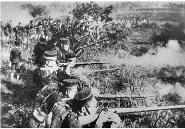

(Japanese)This image depicts Japanese soldiers embroiled in the fight for Manchuria, territory in Northeast Asia. Attacking this land was considered an act of aggression against both China and Russia, and can be considered one of Japan's first actions in WWII